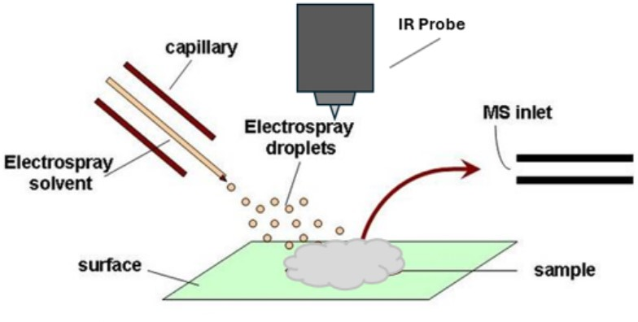
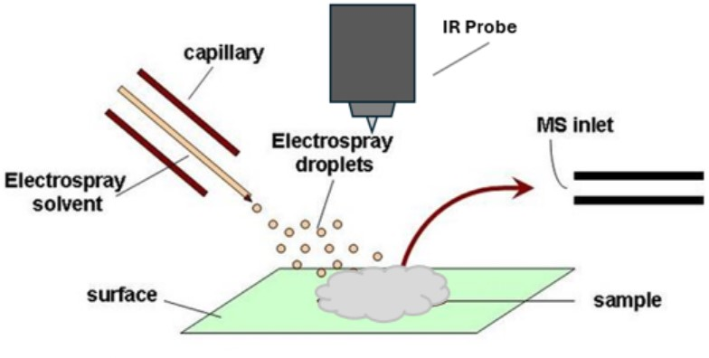

Zen Spectrometer
Celestial Insight's flagship instrument.
 

The Zen spectrometer is a workhorse for analyzing any type of groundscore! Whether that be pils, powders, patches, or papers! With one simple analysis you can be absolutely positive that what you found is worth popping! No more expensive ER visits, bad trips, or anxiety attacks - just peace of mind so you can enjoy your time!
Technical Specifications
The Zen spectrometer uses a state-of-the-art DualdoseTM probe that combines a desorptive electrospray ion source (DESI) with an IR probe for simultaneous analysis of both Mass and IR spectral information. The autosampler uses our patented VibeCheckTM auto alignment system, which hits the sample stage with ultrasonic waves to determine sample location. Once the sample passes this vibe check the probe automatically hones in on it and blasts it with a combination of infrared radiation and electrospray droplets to ionize the sample while also obtaining an IR spectra. The analyte ions are then directed into the mass analyzer where they are subjected to torture by varying electrical currents until they give up their mass spectral information. These various spectra are then matched to our ContamfamTM spectral reference library to determine the identity of the sample. IR spectroscopy is used to determine the purity of the sample, while the mass spectral information identifies the sample components. The Zen spectrometer uses tandem-tandem mass spectrometry. By splitting the ions into two separate triple quadrupoles we can compare them to one another in real time. This allows us to be totally confident in our results.
The dualdose probe can also be operated in two additional modes: IR only and DESI-MSI. The benefits of IR only mode is it is a non destructive analysis, so you can reclaim your entire score! DESI-MS mode can be used to map concentrations of your desired analyte, so if only part of it is contaminated you can remove that section and enjoy the rest!